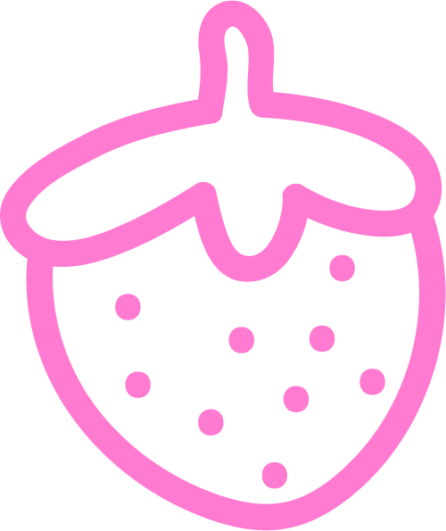

and ? (2023)
tension
tension (alice's version)
10 situations that cause tension:
wanting to hug someone but unsure whether yall are close enough (emotionally) yet - making eye contact with someone you know but don't quite know
- walking towards an acquaintance down a street who's also walking towards you but the two of you are still too far apart to say hi
- deciding if you should tip and/or how much you should tip
- there's only 1 piece of food left
- seeing someone cut you in line
- unnecessary joke at a bad time
- student challenging the professor during class
- holding back a snarky comment/epic comeback while arguing with your mom
- wanting to tell your mom something but not doing so in fear of worrying her and/or incriminating yourself
research
process
outcome
